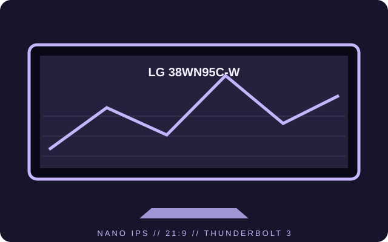

[ INDIVIDUAL COMPONENT // DISPLAYS ]
LG 38WN95C-W
A 37.5-inch 21:9 Nano IPS monitor with 3840 × 1600 resolution, high refresh and Thunderbolt 3.

IDENTIFICATION: Model 38WN95C-W; regional packaging and suffixes may vary. The figures below identify this model family, not similarly named LG ultrawide monitors.
Specifications
| Catalog subcategory | LCD displays |
|---|---|
| Exact product | LG 38WN95C-W UltraWide |
| Panel and native resolution | 37.5-inch Nano IPS LCD, 3840 × 1600 (21:9) |
| Native refresh | Up to 144 Hz at native resolution over a supported DisplayPort connection |
| Luminance / contrast | 450 cd/m² typical; 1000:1 typical |
| Inputs / companion ports | DisplayPort 1.4, HDMI 2.0 × 2, Thunderbolt 3 with up to 85 W host charging, USB-A hub |
| Stand / VESA | Height and tilt adjustment; 100 × 100 mm VESA mounting |
| Power / compatibility | AC mains input; use the supplied power lead and check the unit label for regional voltage. For 3840 × 1600 at 144 Hz, use a compatible DisplayPort 1.4 source and cable; Thunderbolt charging is limited to the monitor's rated 85 W. |
Preservation notes
Record whether operation uses Thunderbolt, HDMI or DisplayPort and whether adaptive sync is enabled. High refresh is input- and graphics-dependent; preserve the tested cable and timing settings with the monitor.
Manufacturer documentation and sources
- LG — 38WN95C-W UltraWide monitorOfficial product specification and feature page.
- LG Support — 38WN95C-W manuals and supportManufacturer support material for the model.